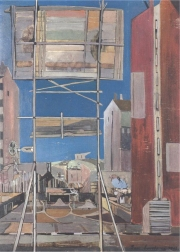
Smetana: Domy na pøedmìstí
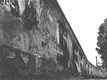
Hák: Zeï
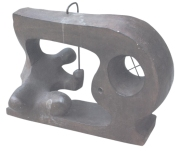
Zívr: Mu� u stroje
|
SKUPINA 42
Skupina 42 se oficiálnì ustavila roku 1942, jak napovídá èíslo v názvu, nìkteøí vıtvarníci ale spolupracovali u� od konce 20. let a spisovatelé pøispìli do Jarního almanachu básnického z roku 1940. Od starších avantgardních skupin se lišila tím, �e vznikla v dobì okupace, kdy mo�nosti publikování byly minimální a vládla velmi silná cenzura. S vìtšinou dìl se tedy mohli ètenáøi seznámit a� po roce 1945.
Èlenové Skupiny 42 také nemohli vydat �ádnı manifest ani jiné spoleèné prohlášení. Její program definoval teoretik Jindøich Chalupeckı v nìkolika èláncích, nejjasnìji ale vysvítá z dìl jednotlivıch malíøù a spisovatelù. Hlavními tématy v tvorbì èlenù Skupiny 42 jsou mìsto, èlovìk a periferie. Zajímali se o obyèejné lidi a jejich ka�dodenní starosti nebo zobrazovali okrajové èásti mìst. Spisovatelé vyu�ívali autentickı nespisovnı jazyk a stavìli se do role nezúèastnìného pozorovatele a nestranného zapisovatele bì�nıch hovorù, jejich� útr�ky skládali k sobì jako èásti kolá�e. Vìtšinou psali volnım veršem. Existenciální pocity prohlubovala atmosféra protektorátu.
Nejvıznamnìjšími èleny Skupiny 42 byli spisovatelé Jiøí Koláø, Josef Kainar a Ivan Blatnı, z malíøù potom Kamil Lhoták, František Hudeèek, František Gross nebo Jan Smetana. Do èinnosti Skupiny 42 se zapojil rovnì� fotograf Miroslav Hák nebo sochaø Ladislav Zívr.
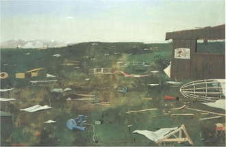
Lhoták: Meteorologická stanice po bouøi
|
Konec Skupiny 42
Po roce 1948 se Skupina 42 rozpadla. Blatnı emigroval, Kainar zaèal psát budovatelskou poezii a Koláø se stal nepohodlnım autorem, nemohl oficiálnì publikovat, a dokonce byl za sbírku Prométheova játra uvìznìn. Vlastní cestou se vydali i jednotliví malíøi.
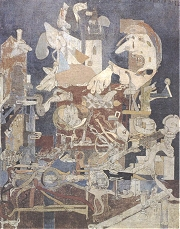
Gross: Jídelna v Elektrickıch podnicích
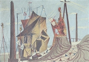
Hudeèek: Malíø na periferii
|
Jindøich Chalupeckı
(1910-1990)
Kritik Chalupeckı se zabıval literaturou i vıtvarnım umìním. Po Únoru 1948 a v dobì normalizace nemohl v Èechách oficiálnì publikovat. Je autorem statí Smysl moderního umìní, Svìt, v nìm� �ijeme nebo Generace, knih Umìní dnes, Obhajoba umìní, Nové umìní v Èechách, Expresionisté, monografie o spisovateli Weinerovi a malíøi Janouškovi nebo sbírky medailonù devíti èeskıch umìlcù (Koláø, Boudník, Novák...) Na hranicích umìní. S man�elkou Jiøinou Haukovou pøelo�il Eliotovu Pustou zemi.
|
Jindøich Chalupeckı: Svìt, v nìm� �ijeme
Èlenové Skupiny 42 nevystoupili spoleènım manifestem jako jiná avantgardní uskupení. V dobì okupace to ani nebylo mo�né. Za základní programovı text je pova�ována sta� Jindøicha Chalupeckého z roku 1940 Svìt, v nìm� �ijeme.
|
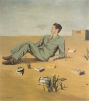
Lhoták: Jindøich Chalupeckı
Vypiš ústøední myšlenky èlánku Svìt, v nìm� �ijeme.
Souhlasíš s Chalupeckım?
|
Jiøí Koláø (1914-2002)
Koláø byl vùdèí osobností Skupiny 42. Po roce 1948 nemohl publikovat a kvùli básnické sbírce Prométheova játra strávil nìkolik mìsícù ve vìzení. V 60. letech se vìnoval experimentální poezii. V dobì normalizace ho znovu postihl zákaz publikování, postupnì opustil básnickou tvorbu a plnì se zamìøil na vıtvarné umìní. Od roku 1981 �il v Paøí�i, odkud finanènì podporoval èeské umìlce. Ve svìtì se proslavil pøedevším originálními kolá�emi. Koláø je autorem básnickıch sbírek Køestnı list, Ódy a variace, Limb a jiné básnì, Sedm kantát a Dny v roce. Roky v dnech u� nemohly vyjít. Spoleènì s Josefem Hiršalem pøevyprávìl pro dìti pøíbìhy o Ezopovi, Enšpíglovi, obyvatelích Kocourkova a baronu Prášilovi. Napsal také experimentální sbírky Mistr Sun o básnickém umìní, Básnì ticha, Marsyas, Vršovickı Ezop, Novı Epiktet, Návod k upotøebení nebo Oèitı svìdek.
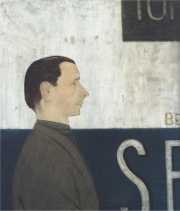
Lhoták: Básník Jiøí Koláø
|
Jiøí Koláø: Dny v roce a Roky v dnech
Knihy Dny v roce a Roky v dnech spolu úzce souvisejí. První je sbírkou básní, druhá deníkovıch záznamù. Koláø si pøedsevzal, �e bìhem jednoho roku bude pravidelnì psát jednu báseò a prózu dennì. I kdy� je celkovı poèet textù menší, podaøilo se mu zmapovat období od 18. února 1946 do 15. února 1947. Jeho básnì z tohoto období pøipomínají spíše záznamy nestranného pozorovatele. Aby byla zdùraznìna jejich dokumentárnost, jsou opatøeny pøesnım datem vzniku. Dny v roce ještì mohly vyjít, ale sazba Rokù v dnech byla rozmetána a kniha vyšla v Èechách a� roku 1992.
Jiøí Koláø: Marsyas
V básnické sbírce Marsyas Koláø zajímavì pracuje s nespisovnım jazykem a fonetickım pøepisem slov. Vzal napøíklad známé pøíbìhy z Bible (Šalomoun) nebo èeskıch bájí (Pøemysl a Libuše) a nechal moderního nevzdìlaného vypravìèe, aby je pøevyprávìl obecnou èeštinou ve stylu „jak mu zobák narost“.
|
Psal/a sis nìkdy deník? Jak dlouho ti to vydr�elo?
K èemu je psaní deníku dobré?
Zkus si vést deník alespoò jeden mìsíc.
Co nového ses dozvìdìl/a o Koláøovi z jeho záznamù?
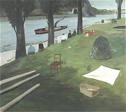
Lhoták: Na Císaøské louce roku 1927
Jak na tebe pùsobí ukázky z Koláøovy sbírky Marsyas?
Kdo byl Marsyas?
|
Josef Kainar (1917-1971)
Kainar se narodil v Pøerovì a zemøel v Dobøíši. Po zavøení vysokıch škol nìmeckımi okupanty vystøídal øadu zamìstnání. Byl �eleznièním pochùzkáøem, dìlníkem na pile nebo kytaristou. K jazzové hudbì mìl blízko celı �ivot. Od roku 1947 se �ivil literaturou, stal se èelnım pøedstavitelem oficiální kultury a èasto pobıval na zámku spisovatelù v Dobøíši. Krátce pøed smrtí byl pøedsedou normalizaèního Svazu èeskıch spisovatelù. Poetika Skupiny 42 ovlivnila jeho sbírky Pøíbìhy a menší básnì, Osudy a Nové mıty. Po roce 1948 psal konjunkturální budovatelskou poezii – Veliká láska, Èeskı sen. Pozdìji se ale vrátil ke koøenùm své tvorby – Èlovìka hoøce mám rád, Lazar a píseò, Moje blues. Psal také písòové texty – Miss Otis lituje..., divadelní hry – Cirkus plechovı, Nebo�tík Nasredin, Ubu se vrací aneb Drš�ky nebudou a verše pro dìti – Øíkadla (Nevídáno – neslıcháno), Zlatovláska.
Kdo byl Lazar, Nasredin a Ubu?
|
Josef Kainar: Nové mıty
Vrcholem Kainarovy tvorby zalo�ené na poetice Skupiny 42 je kniha Nové mıty. Nìkteré básnì z této sbírky byly pozdìji zhudebnìny.
Josef Kainar: Lazar a píseò
Na pøelomu 50. a 60. let pøestal Kainar psát budovatelskou poezii a vrátil se k vıchodiskùm své tvorby i poetice Skupiny 42, jak ukazují jeho básnì ze sbírky Lazar a píseò (1960).
|

Kdo zhudebnil báseò Støíhali dohola malého chlapeèka?
Které Kainarovy básnì byly zhudebnìny?
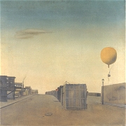
Lhoták: Balon nad pøedmìstím
Jak na tebe pùsobí nespisovná èeština v Kainarovıch básních?
Proè ji Kainar pou�il?
|
Ivan Blatnı (1919-1990)
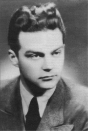
Blatnı se narodil v Brnì a zemøel v anglickém Colchesteru. Byl synem pøedsedy brnìnské Literární skupiny dramatika Lva Blatného, kterı zesnul v jeho 11 letech, o dva roky pozdìji zemøela i jeho matka. Blatnı byl zázraènım dítìtem – v útlém vìku zaèal pøekládat Goetha. Za okupace vydal básnické sbírky Paní Jitøenka a Melancholické procházky, pøispìl té� do Jarního almanachu básnického. Po válce vyšly sbírky Tento veèer a Hledání pøítomného èasu nebo knihy veršù pro dìti Na kopané a Jedna, dvì, tøi, ètyøi, pìt. Roku 1948 emigroval do Anglie. V roce 1954 u nìj naplno propukla paranoidní schizofrenie a zbytek �ivota strávil v psychiatrickıch léèebnách. Verše z této doby vyšly ve sbírkách Stará bydlištì a Pomocná škola Bixley.
|
Blatného poezie
Blatnı byl zpoèátku velmi ovlivnìn tvorbou Vítìzslava Nezvala. K poetice Skupiny 42 má nejblí�e jeho sbírka Tento veèer.
Ivan Blatnı: Pomocná škola Bixley
Poslední Blatného verše se podaøilo zachránit pouze náhodou. Zdravotní sestra, která o básníka peèovala, poslala obrovské mno�ství papírkù popsanıch verši man�elùm Škvoreckım do Kanady. Básník Antonín Brousek texty uspoøádal do sbírek Stará bydlištì a Pomocná škola Bixley, které vyšly v jejich nakladatelství Sixty-Eight Publishers a jako samizdaty. V Èechách mohly bıt oficiálnì publikovány a� po roce 1989. Básnì jsou poznamenány autorovou duševní chorobou. Jde o volnì øazené útr�ky vzpomínek, ve kterıch se mísí èeština s angliètinou, nìmèinou a francouzštinou.
Další èlenové Skupiny 42 a jejich díla
Jiøina Hauková: Pøísluní, Cizí pokoj, Oheò ve snìhu
Jan Hanè: Události
|
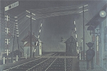
Hudeèek: Nádra�í s vìtrnım mlınem
Charakterizuj jazyk básnì Mikulášská noc.
O èem tato báseò podává svìdectví?
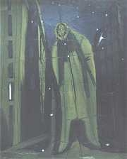
Hudeèek: Noèní chodec
Pokus se pøelo�it cizojazyèné verše do èeštiny.
Jak na tebe pùsobí tyto vícejazyèné básnì?
Psali vícejazyèné texty i jiní spisovatelé? Kteøí? Proè?
|
Internetové stránky
Koláø, básnì
Kaianr, básnì
Blatnı
Blatnı, básnì
Hauková, básnì
Hanè, básnì
Rulf: Ivan Blatnı, èlánek
Rulf: Jiøí Koláø, èlánek
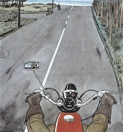
Lhoták: Pohled z motocyklu
|
Doporuèená èetba
Augustin, L.H.: Kamil Lhoták, Academia, Praha 2000
Blahynka, Milan: Èlovìk Kainar, Ostrava 1983
Blatnı, Ivan: Pomocná škola Bixley, Torst, Praha 1997
Blatnı, I.: Stará bydlištì, Petrov, Brno 1992
Blatnı, I.: Tento veèer, Èeskoslovenskı spisovatel, Praha 1991
Blatnı, I.: Texty a dokumenty 1930-1948, Atlantis, Brno 1999
Blatnı, I.: Verše 1933-1953, Atlantis, Brno 1995
František Gross, Praha 1969
Hanè, Jan: Události, Torst, Praha 1995
Hauková, Jiøina: Básnì, Torst, Praha 2000
Chalupeckı, Jindøich: Expresionisté, Praha 1992
Chalupeckı, J.: Na hranicích umìní, Prostor a Arkıø, Praha 1990
Chalupeckı, J.: Obhajoba umìní, Praha 1991
Jiøí Koláø, Odeon, Praha 1993
Kainar, Josef: Vybrané spisy (3 svazky), Èeskoslovenskı spisovatel, Praha 1990
Karfík, Vladimír: Jiøí Koláø, Èeskoslovenskı spisovatel, Praha 1994
Koláø, Jiøí: Køestnı list, Ódy a variace, Limb a jiné básnì, Sedm kantát, Dny v roce, Roky v dnech, Odeon, Praha 1992
Konfese Ladislava Zívra, Host, Brno 1997
Lhoták, Kamil: Balon, køídla, vrtule, Praha 1948
Lhoták, K.: Kolo, motocykl, automobil, Praha 1950
Pešat, Z., Petrová, E.: Skupina 42, Atlantis, Brno 2000
Petrová, Eva a kol.: Skupina 42, Akropolis, Praha 1998 (katalog k vıstavì)
|
Vypracuj písemnı referát o nìkteré z uvedenıch knih.
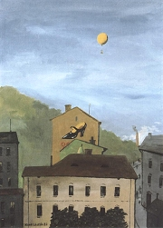
Lhoták: �i�kov
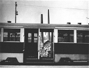
Hák: Koneèná v Dejvicích
|
|